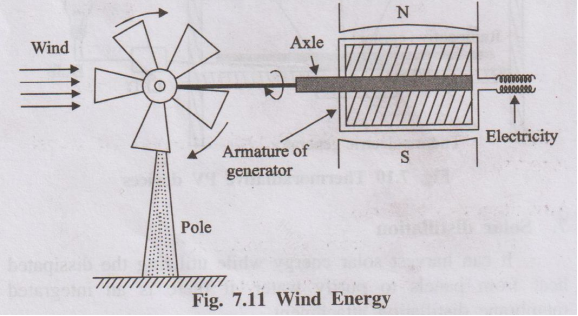
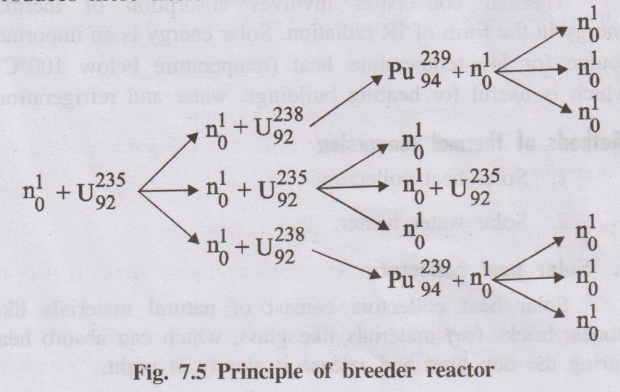
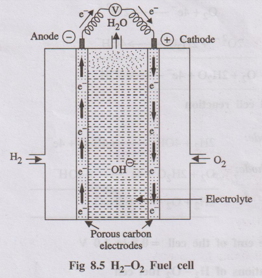
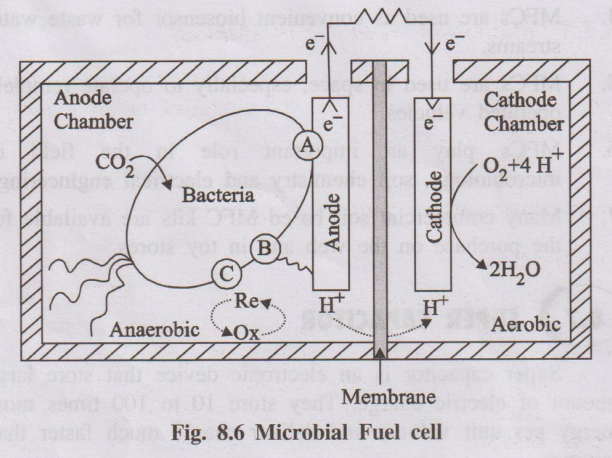
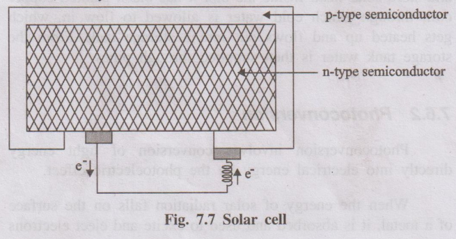
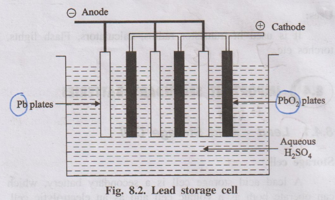
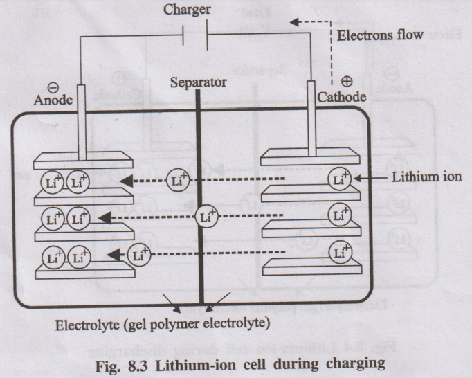
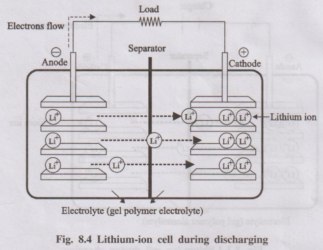
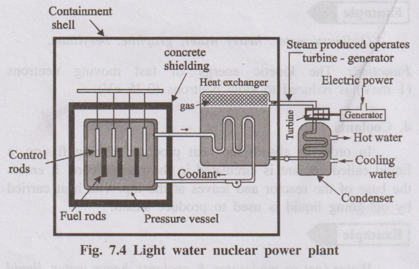
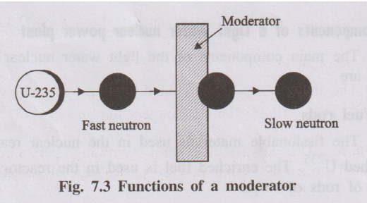

ENGINEERING CHEMISTRY – UNIT 3 (ENERGY SOURCES & STORAGE DEVICES) – PART B
Wind Energy & Breeder Reactor
1. (i) How is wind energy harnessed? What are its advantages and limitations?
(ii) Write a detailed note on breeder reactor. (13 Marks)
Part (i): Harnessing of Wind Energy
Wind energy is the energy recovered from moving air (wind). Kinetic energy of the wind is converted into mechanical energy and then into electrical energy.
1. Wind Mill – Construction and Working

Construction
- A tall tower with a wheel or rotor at the top containing a number of blades.
- The rotor is mounted on a horizontal shaft (axle).
- One end of the shaft is connected to the armature of a generator located near the top or bottom of the tower.
- The other end is connected to the wheel that faces the wind.
Working
- When wind blows, it strikes the blades and makes the rotor spin.
- The spinning rotor turns the shaft connected to the generator.
- The generator converts the mechanical rotation into electrical energy.
- Thus, the energy conversion sequence is:
Wind energy → Kinetic energy → Mechanical energy → Electrical energy
2. Wind Farm
Electricity produced by a single wind mill is small. For commercial production, many wind mills are erected in a region and interconnected. Such an area is called a wind farm. The output from individual generators is combined to obtain large-scale electricity.
3. Advantages (Merits) of Wind Energy
- It is a clean and non-polluting source of energy.
- Renewable and inexhaustible.
- Low operating cost once the plant is installed.
- Suitable for remote and coastal areas with good wind potential.
4. Limitations / Disadvantages
- Public often resists wind farms near populated areas due to noise and visual impact (loss of aesthetic beauty).
- Wind farms on migratory bird routes can be hazardous to birds.
- Wind is intermittent and not available all the time; power generation fluctuates.
- Wind turbines interfere with electromagnetic signals like TV and radio.
- Not suitable for operating very heavy machines alone; usually combined with other power sources.
Wind energy is a promising renewable resource, harnessed mainly by wind mills and wind farms, but its intermittent nature and environmental impacts impose certain limitations.
Part (ii): Breeder Reactor
A breeder reactor is a nuclear reactor that converts non-fissionable (fertile) materials like U-238 or Th-232 into fissionable (fissile) materials such as Pu-239 or U-233, and thus produces more fissile material than it consumes.

1. Principle
In a breeder reactor, only one of the neutrons produced in the fission of U-235 is used to continue the chain reaction. The other neutrons are absorbed by fertile nuclei such as U-238, converting them into new fissile nuclei (Pu-239). Hence, the reactor “breeds” fuel.
2. Illustration of Reactions
Fission of U-235
U-235 + n → Fission fragments (Ba-139, Kr-95 etc.) + 3 n + Energy
Of the 3 neutrons produced, one continues the chain reaction with U-235 and the other two are allowed to react with U-238 present in the reactor.
Breeding of Pu-239
U-238 + n → U-239 → Np-239 → Pu-239
Thus, for every atom of U-235 consumed, two fissile atoms of Pu-239 are produced. Pu-239 is a man-made nuclear fuel and is called a secondary nuclear fuel.
3. Significance
- Fertile nucleides like U-238 and Th-232 are converted into fissile nucleides (Pu-239, U-233).
- Improves utilisation of natural uranium resources and extends fuel supply.
- Breeder reactors have higher fuel efficiency because regeneration of fissile material takes place.
Breeder reactors play a vital role in nuclear power programmes by converting abundant fertile materials into valuable fissile fuels, thereby “breeding” more fuel than they consume.
Fuel Cells
2. (i) Describe the construction and working of Hydrogen–Oxygen fuel cell.
(ii) Describe the construction and working of microbial fuel cell. (13 Marks)
Part (i): Hydrogen–Oxygen Fuel Cell
A fuel cell is a voltaic cell which converts the chemical energy of a fuel directly into electrical energy without combustion. In a hydrogen–oxygen fuel cell, hydrogen is the fuel and oxygen is the oxidant.

Construction
- Two porous electrodes (anode and cathode) made of compressed carbon, containing a small amount of catalyst (Pt, Pd or Ag).
- Between the electrodes is an aqueous electrolyte (about 25% KOH or NaOH solution).
- Hydrogen gas is supplied to the anode compartment and oxygen gas to the cathode compartment.
- The electrodes are connected externally through a circuit with a load/voltmeter.
Working
Hydrogen is oxidized at the anode and oxygen is reduced at the cathode.
Anode reaction (oxidation):
H₂ + 2OH⁻ → 2H₂O + 2e⁻
Cathode reaction (reduction):
O₂ + 2H₂O + 4e⁻ → 4OH⁻
Overall cell reaction:
2H₂ + O₂ → 2H₂O + Electrical energy
The cell produces an emf of about 0.8–1.0 V per cell. A number of such cells connected in series form a fuel battery.
Applications & Advantages
- Used as auxiliary power source in space vehicles, submarines and military applications.
- Product water can be used as a source of fresh water for astronauts.
- High efficiency (≈ 75%) and low pollution (only water vapour as product).
Part (ii): Microbial Fuel Cell (MFC)
A microbial fuel cell is a device that converts chemical energy of organic matter directly into electrical energy by the catalytic action of microorganisms under anaerobic conditions.

1. Construction & Principle
Components
- Anodic compartment: Contains anolyte (wastewater/biomass) with microbes under anaerobic conditions. Anode is a conductive electrode where oxidation occurs.
- Cathodic compartment: Contains a suitable electron acceptor (mostly dissolved oxygen). Cathode is where reduction takes place.
- Membrane: A cation-selective or proton-exchange membrane separates the two compartments and allows ions to pass to maintain charge balance.
2. Working
Anodic Reactions
Microorganisms oxidize organic substrates (biomass/wastewater) under anaerobic conditions, producing CO₂, protons and electrons.
Organic matter → CO₂ + H⁺ + e⁻ (microbially catalysed)
Electrons are transferred to the anode either directly or via mediators.
Electron & Ion Flow
- Electrons flow from the anode to the cathode through an external circuit, producing electric current.
- Protons (H⁺) move through the membrane from the anodic chamber to the cathodic chamber.
Cathodic Reaction
At the cathode, oxygen (or another electron acceptor) combines with electrons and protons to form water:
O₂ + 4H⁺ + 4e⁻ → 2H₂O
3. Applications
- Treatment of wastewater with simultaneous generation of electricity.
- Power source in remote aquatic environments where conventional batteries are difficult to use.
- Conversion of carbon-rich wastewater into useful gases (e.g., methane) in some designs.
- Used as biosensors for monitoring wastewater streams.
Hydrogen–oxygen fuel cells and microbial fuel cells are important examples of fuel cells that directly convert chemical energy to electrical energy, offering high efficiency and low pollution.
Solar Cell / Photovoltaic Cell
3. What is photovoltaic cell? Explain the construction and working of a photovoltaic cell with a diagram. (13 Marks)
A photovoltaic cell or solar cell is a semiconductor device which converts solar energy (sunlight) directly into electrical energy based on the photovoltaic effect.

1. Principle (Photovoltaic Effect)
When solar radiation falls on a p–n junction semiconductor, photons are absorbed and electron–hole pairs are generated. Due to the built-in electric field at the junction, electrons and holes move in opposite directions, creating a potential difference between the two layers. This potential difference drives a current through an external circuit.
2. Construction
Semiconductor Layers
- p-type semiconductor: Silicon doped with a trivalent impurity (e.g., boron).
- n-type semiconductor: Silicon doped with a pentavalent impurity (e.g., phosphorus).
- The p- and n-layers are in intimate contact forming a p–n junction.
Contacts and Encapsulation
- Metallic contacts are provided on top and bottom to collect current.
- The top surface is often coated with an anti-reflective layer to maximise absorption of sunlight.
- The entire cell is encapsulated with glass or transparent plastic for protection.
3. Working
- When sunlight falls on the p–n junction, photons with sufficient energy excite electrons from the valence band to the conduction band in the semiconductor.
- These excited electrons move towards the n-side, while holes move towards the p-side, creating a charge separation.
- This creates a potential difference (voltage) across the junction.
- When the external circuit is connected, electrons flow from n-layer to p-layer through the load, producing electric current.
- The current and voltage increase as the intensity of sunlight increases.
4. Applications of Solar Cells
- Solar calculators, wrist watches and small electronic gadgets.
- Solar street lights and domestic rooftop solar panels.
- Solar pumps for agriculture and water supply in remote areas.
- Power source for space crafts and artificial satellites.
- Used in combination as solar batteries to run lights, fans and other loads.
Photovoltaic cells provide a clean and renewable method of converting solar energy directly into electricity, with wide applications from small devices to large power plants.
Lead Acid & Lithium-ion Batteries
4. (i) Explain the construction and working of Lead acid storage battery.
(ii) Working mechanism of lithium ion battery with neat diagram. (13 Marks)
Part (i): Lead–Acid Storage Battery
Lead–acid storage cell is a secondary battery which can work both as a voltaic cell (discharging) and as an electrolytic cell (charging). It is widely used as a storage battery in automobiles.

Construction
- Each cell consists of lead (Pb) plates as anodes and lead dioxide (PbO₂) plates as cathodes.
- Several Pb plates are connected in parallel to form the negative plate, and several PbO₂ plates in parallel form the positive plate.
- Plates are separated by insulating separators (rubber or glass fibre).
- The assembly is immersed in dilute H₂SO₄ (≈ 38% by mass, density ≈ 1.30 g/mL).
- A 12 V battery usually consists of 6 such cells connected in series (each ≈ 2 V).
Discharging (Supplying Current)
During discharge, the cell acts as a galvanic cell and the following reactions occur:
Anode (oxidation): Pb → Pb²⁺ + 2e⁻; Pb²⁺ + SO₄²⁻ → PbSO₄(s)
Cathode (reduction): PbO₂ + 4H⁺ + SO₄²⁻ + 2e⁻ → PbSO₄(s) + 2H₂O
Overall reaction during discharge:
Pb + PbO₂ + 2H₂SO₄ → 2PbSO₄ + 2H₂O
PbSO₄ is deposited on both electrodes and H₂SO₄ is consumed, therefore the density of the electrolyte decreases.
Charging
For charging, an external DC source is connected so that the battery acts as an electrolytic cell. The electrode reactions are reversed:
2PbSO₄ + 2H₂O → Pb + PbO₂ + 2H₂SO₄
Pb is regenerated at the anode, PbO₂ at the cathode and concentration (density) of H₂SO₄ increases.
Advantages & Uses
- Provides high current and can be recharged many times.
- Low self-discharge, works even at low temperatures.
- Used widely in automobiles, inverters, telephone exchanges, hospitals and power stations.
Part (ii): Lithium–Ion Battery (LIB)
Lithium–ion battery is a rechargeable secondary battery in which the movement of Li⁺ ions between two intercalation electrodes (lithium metal oxide and carbon) during charging and discharging is responsible for energy storage.


1. Construction
Components
- Positive electrode (cathode during discharge): Layered lithium metal oxide, typically LiCoO₂.
- Negative electrode (anode during discharge): Porous carbon (graphite) layers.
- Electrolyte: Polymer gel or organic solvent containing Li⁺ salts.
- Separator: Perforated plastic membrane that allows Li⁺ ions to pass but prevents electronic contact between electrodes.
2. Working Mechanism
Charging
When an external charger is connected:
- Li⁺ ions move from the LiCoO₂ cathode to the graphite anode through the electrolyte.
- Electrons flow through the external circuit from LiCoO₂ to graphite.
- Li⁺ ions and electrons are stored (intercalated) in the graphite as LixC.
Overall (simplified): LiCoO₂ + C → Li₁₋xCoO₂ + CLix
Discharging
During discharge (battery in use):
- Li⁺ ions move back from graphite to LiCoO₂ through the electrolyte.
- Electrons flow through the external circuit from graphite to LiCoO₂, doing electrical work.
Overall (reverse): Li₁₋xCoO₂ + CLix → LiCoO₂ + C
Characteristics & Uses
- High voltage and energy density, low weight and compact size.
- Produces about three times the voltage of Ni–Cd batteries.
- No significant memory effect; long cycle life.
- Used in mobile phones, laptops, portable TVs, cameras and most modern E-vehicle battery packs.
Lead–acid batteries are traditional, robust storage devices for heavy-duty applications, while lithium–ion batteries offer high energy density and are preferred in portable electronics and electric vehicles.
Electric Vehicles
5. Explain the components, working and types of E-vehicles in detail. (13 Marks)
Electric vehicles (EVs) are vehicles powered by electric motors using electricity stored in rechargeable batteries instead of internal combustion engines using petrol or diesel.
1. Working Principle
- Electric energy is taken from a battery pack and regulated by a controller.
- The controller feeds appropriate AC or DC power to the electric motor via an inverter.
- The motor converts electrical energy into mechanical energy, rotating the transmission and wheels.
- When brakes are applied, the motor acts as a generator (regenerative braking) and sends power back to the battery.
2. Essential Components of an EV
- Battery: Stores electrical energy required to power the motor.
- Charge port: Allows connection to an external power supply for charging.
- Onboard charger: Converts AC from the grid to DC to charge the battery.
- DC/DC converter: Converts high-voltage DC from the main battery to low-voltage DC for auxiliaries (lights, electronics).
- Electric motor: Converts electrical energy to mechanical rotation to drive wheels.
- Power electronics controller: Controls power flow from battery to motor and regulates speed and torque.
- Thermal management system: Maintains optimum temperature of battery, motor and electronics.
- Transmission: Transfers mechanical power from motor to wheels (usually single-speed gearbox in EVs).
3. Types of Plug-in Electric Vehicles
1. Battery Electric Vehicles (BEVs)
- Also called pure or fully electric vehicles.
- Powered only by batteries and electric motor; no internal combustion engine (ICE).
- Batteries are charged by plugging into an external charger.
- Typical driving range: 150–300 miles depending on battery capacity.
2. Hybrid Electric Vehicles (HEVs)
- Contain both a conventional ICE and an electric motor.
- ICE uses fuel (petrol/diesel); motor uses electricity from a small battery.
- Batteries are charged by ICE and by regenerative braking, not by plugging in.
- ICE and motor together drive the transmission and wheels.
3. Plug-in Hybrid Electric Vehicles (PHEVs)
- Have both ICE and a larger rechargeable battery pack.
- Battery can be charged by plugging in as well as by ICE and regenerative braking.
- Vehicle initially runs on electric mode; when battery is depleted, ICE takes over and it behaves like a normal hybrid.
4. Fuel Cell Electric Vehicles (FCEVs)
- Use fuel cell (e.g., hydrogen–oxygen) to generate electricity onboard the vehicle.
- Chemical energy of fuel is directly converted to electrical energy to run the motor.
- Only water vapour is emitted, making it very eco-friendly.
4. Advantages of Electric Vehicles
- High energy efficiency and lower running cost compared to ICE vehicles.
- No tailpipe emissions; helps reduce air pollution and greenhouse gas emissions.
- Less moving parts → lower maintenance cost and quieter operation.
- Regenerative braking recovers some energy during deceleration.
5. Disadvantages / Challenges
- Limited driving range compared to conventional vehicles (improving with technology).
- Longer refuelling (recharging) time.
- Higher initial cost due to expensive battery packs.
- Charging infrastructure is still under development in many regions.
Electric vehicles, with different configurations like BEV, HEV, PHEV and FCEV, represent a major shift towards clean and efficient transportation, although battery cost and charging infrastructure remain key challenges.
Light Water Nuclear Reactor
6. Explain the various components of light water nuclear reactor with a block diagram with its parts and functions. (13 Marks)
A light-water nuclear power plant is a reactor in which enriched U-235 fuel rods are submerged in ordinary water. Here water acts both as coolant and moderator.

1. Main Components and Functions
1. Fuel Rods
- Made of enriched U-235 or Pu-239 in the form of rods or strips.
- Arranged in bundles in the reactor core.
- Function: Undergo nuclear fission, produce large amount of heat and neutrons to sustain chain reaction.
2. Control Rods
- Movable rods made of neutron-absorbing materials like cadmium or boron.
- Inserted between fuel rods and can be raised or lowered.
- Function: Control the rate of fission by absorbing excess neutrons. Deep insertion slows down reaction; withdrawal speeds it up.
3. Moderator
- Substance used to slow down fast neutrons to thermal energies.
- In light water reactors, ordinary water itself acts as moderator (heavy water or graphite can also be used in other designs).
- Function: Reduces kinetic energy of fast neutrons so that they can effectively cause further fission in U-235.

4. Coolant
- Fluid circulated through the reactor core to absorb heat.
- In light water reactor, water itself is the coolant; in other reactors, heavy water, liquid Na, Na–K alloy or CO₂ may be used.
- Function: Carries heat from the core to the heat exchanger/steam generator.
5. Pressure Vessel
- Thick steel container surrounding the core and coolant.
- Has inlets and outlets for coolant flow.
- Function: Withstands high pressure (up to ≈ 200 kg/cm²) and prevents leakage of coolant and radiation.
6. Protective Shield
- Thick massive concrete shield surrounding the reactor vessel.
- Function: Protects environment and operating personnel from harmful radiations and provides structural safety.
7. Heat Exchanger / Steam Generator & Turbine
- Hot coolant leaving the reactor passes through a heat exchanger where it transfers heat to secondary water, generating steam.
- Steam drives a turbine coupled to an electric generator to produce electricity.
- After expansion, steam is condensed and recycled.
2. Working of Light Water Nuclear Power Plant
- Enriched U-235 in fuel rods undergoes controlled fission, releasing heat and neutrons.
- Control rods are adjusted (inserted/withdrawn) to maintain a steady rate of fission.
- Water circulating through the core acts as moderator and coolant, absorbing the heat produced.
- Heated water transfers heat to secondary water in heat exchanger, producing steam.
- Steam drives turbine, which in turn drives generator to produce electricity.
- Steam is condensed and the cycle continues.
Light water nuclear reactors use ordinary water as both coolant and moderator, and by controlling the position of control rods, they produce large amounts of electricity in a controlled and efficient manner.
Recent Solar Cell Materials
7. Give the detailed description about the recent development in the solar cell material. (13 Marks)
A typical solar cell uses semiconductor materials (mainly silicon). To improve efficiency and reduce cost, several new and advanced solar cell materials and designs are being developed.
1. Crystalline Silicon (c-Si) and Advanced Multijunction Cells
- Crystalline silicon dominates ≈ 90% of global photovoltaic (PV) market.
- However, single-junction Si solar cells have a practical efficiency limit of about 30%.
- To overcome this, III–V multijunction materials (e.g., GaInP/GaAs/Ge) are used, achieving efficiencies > 30%.
- Hybrid tandem III–V/Si solar cells combine III–V cells with silicon to reach efficiencies > 30%.
- Six-junction III–V solar cells under concentrated light have achieved efficiencies > 47%.
- Si-based bifacial technology can absorb light from both sides of the panel and improve efficiency by ≈ 11% compared to standard panels.
2. Thin-Film Solar Cells
Second-generation thin-film solar cells use very thin light-absorbing layers (≈ 350 times thinner than standard Si panels).
- Examples: Cadmium telluride (CdTe), amorphous silicon (a-Si), gallium arsenide (GaAs) and copper–indium–gallium–selenide (CIGS).
- Thin films are lightweight, flexible, and easy to install on curved or portable surfaces.
- CIGS thin-film cells have achieved efficiencies up to about 21%.
3. Perovskite Solar Cells (PSCs)
- Hybrid metal halide perovskites are a new class of low-cost, high-absorption materials.
- Advantages: solution-processability, low temperature fabrication, and excellent light absorption.
- Perovskite–silicon tandem cells have shown record efficiencies up to about 28%.
- Research aims at improving long-term stability and scaling for commercial use.
4. Solar Paints
Solar paints are coatings that can be applied on surfaces to generate electricity from sunlight.
- Some solar paints generate energy via photovoltaic water splitting (hydrogen-generating paints).
- Quantum dot-based “photovoltaic paints” and perovskite-based paints are under development.
- These can potentially turn large surfaces (walls, roofs) into power-generating areas.
5. Transparent Solar Windows
- Transparent or semi-transparent solar cells can be integrated into window glass.
- They allow visible light to pass while converting other parts of the spectrum into electricity.
- They offer innovative applications in building-integrated photovoltaics with around 10% higher efficiency in some designs.
6. Thermoradiative PV Devices (Reverse Solar Panels)
- These devices can generate electricity at night by using the heat radiated from the panel to the cold deep space.
- Work on the principle opposite to conventional solar cells, utilising temperature difference between the Earth and space.
7. Solar Distillation with PV Panels
- Combines solar energy harvesting with water purification.
- Waste heat from PV panels is used in a membrane distillation attachment to purify water.
- Provides both electricity and clean water in a single integrated system.
Recent developments in solar cell materials – including multijunction and tandem cells, thin films, perovskites, solar paints, transparent windows, thermoradiative devices and integrated solar distillation – aim to achieve higher efficiency, lower cost and wider applications of solar energy in future energy systems.